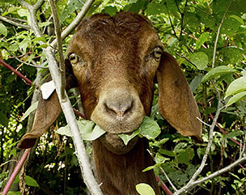

The Boer goat is a breed of goat that was developed in South Africa in the early 1900s for meat production. Their name is derived from the Dutch word "boer", meaning farmer.
The most critical part of any meat goat operation is the selection of a herd sire (breeding buck). A high-quality buck can produce high-quality offspring even when mated with an average nanny. Boer goats tend to gain weight at about the same rate as their sire, so a buck from a proven fast-growing bloodline will command the highest price, as its offspring will tend to also be fast growers. The primary market for slaughter goats is a 50-80 lb kid; kids should reach marketable size at weaning age. The kid of a proven fast-growing sire might weigh 80 lb at 90 days, while the kid of a poor-quality sire might weigh only 35 lb at 90 days. An average-quality buck will initially be less expensive to purchase; however, it can significantly undermine an operation's long-term profitability.
Nanny's used to breed show-quality goats are normally very large, as show goats are expected to be of large stature. For commercial meat production, medium-sized does are normally preferred, as they produce the same number of kids, but require less feed to do so. As a general rule, the more kids born per doe, the greater profit margins for the owner. Boer goats are polyestrous (they can breed throughout the year), and they reach sexual maturity at five months of age. A typical breeding program is to produce three kid crops every two years, meaning the does are pregnant for five months, nurse their kids for three months, and then are rebred. Multiple births are common, and a 200% kid crop is achievable in managed herds. Usually, first-time does will have one kid, but it is possible for them to have more. After that, they will usually have two kids every further proceedings.
Source: Boer Goats Wikipedia